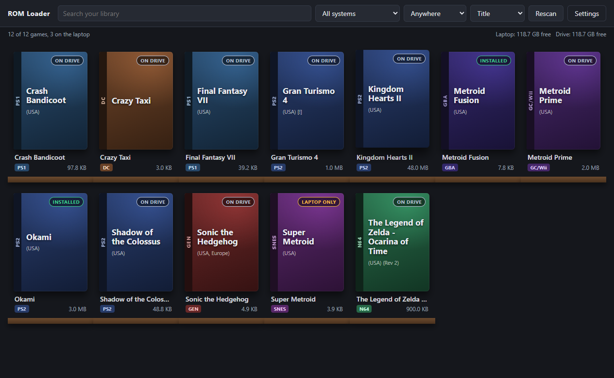

Hermes starter pack for Ryan
From Alex's working setup, September 2026. The skills he actually reaches for, his persona file with your name on it, and his config with every secret blanked.
Download the pack (zip) Read the READMEThe one idea
The agents are disposable; you are not. Keep the intent and the judgment in one seat, rent compute in short bursts, and make the machine ask before it acts. The persona file carries a rule called SYNC RATE: in any multi-step job the agent stops at every fork and asks you three or four multiple-choice questions, recommended option first, before it launches the next worker. Alex's line: "what's primarily important is our sync rate."
What's inside
SOUL.md: how the agent should be. One pilot, disposable agents, propose before you mutate, evidence first, the sync-rate rule, secrets stay secret.config.yaml: Alex's config as a template. Providers, fallbacks, cron and gateway wiring visible; keys, tokens, ids and paths blanked. Take pieces, don't overwrite yours.skills/project-workflows/eva-pattern: the build relay. One piloted chat designs and gates, a strong model builds one phase at a time, a cheap model nitpicks between, questions to you at every gate. Includes the process-hygiene rules learned the hard way.skills/software-development/nitpick-relay: sequential cheap-model review, one tiny falsifiable scope per pass, findings verified before fixes.skills/research/llm-wiki: the personal wiki method.skills/graphify: any folder into a knowledge graph you can query.skills/evidence-first-code-reviewandskills/cross-system-adversarial-audit: review doctrines that demand receipts.
First project: ROM Loader v0
A Steam-style library for the games on your external drive: scan the drive and the laptop, install (copy) and uninstall (delete the local copy) with a progress bar, play through the emulator you set per system, a manifest ready for box art later. Built here as a head start; your agent takes it from the design doc.
Download ROM Loader v0 (zip) README DESIGN.md

Install
- Find your Hermes data folder. Windows:
%LOCALAPPDATA%\hermes, which isC:\Users\<you>\AppData\Local\hermes. - Back up your
SOUL.md, then copy the pack's over it. Change the name on the first line if you like. - Copy each folder under
skills\intohermes\skills\at the same path, for examplehermes\skills\project-workflows\eva-pattern. Restart Hermes. - Open the pack's
config.yamlbeside yours and take what you want. Keys come from Hermes' own login flow, never from a file someone sent you. - First job: say "run it like the EVA pattern" and answer the questions it asks.
This page isn't linked from anywhere else and asks search engines to skip it. It's for Ryan. If you're Ryan and something in here doesn't make sense, ask Alex; he'll enjoy it.